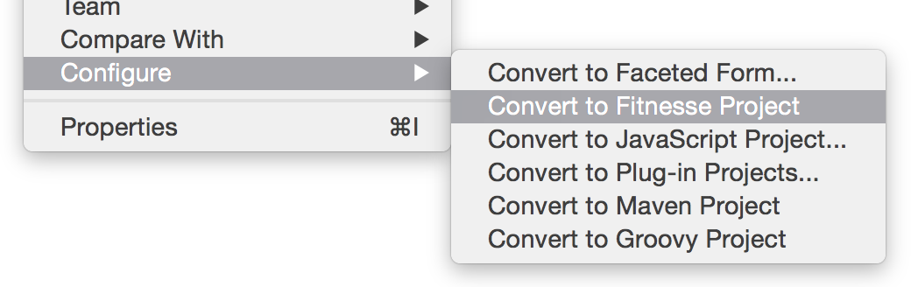
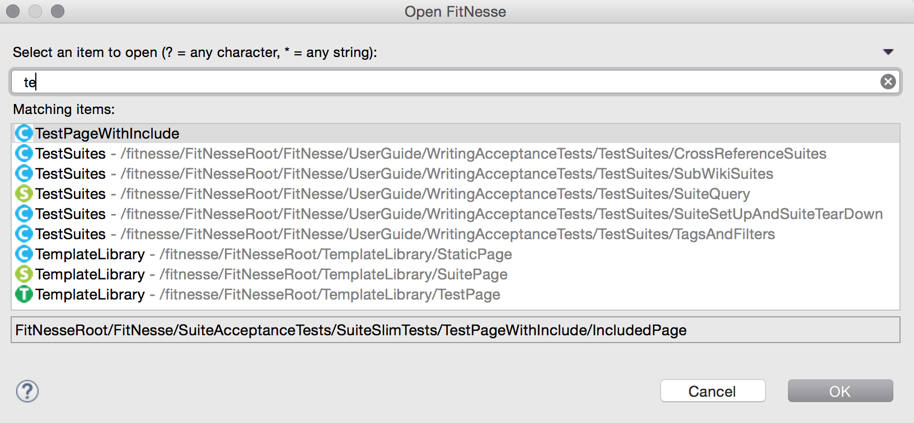
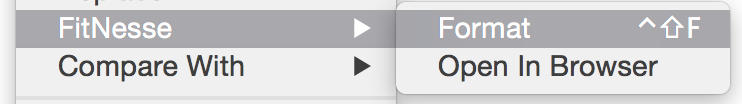
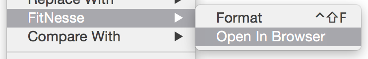
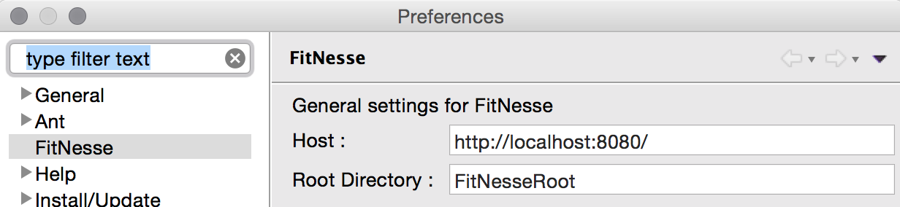

FitNesse Eclipse Plugin
This plugin provides FitNesse editing capabilities from within the eclipse workspace.
Installation
The plugin can be installed into any eclipse (Luna or Mars) running under Java 1.7 or greater.
Eclipse Marketplace
The plugin can be found on the Eclipse Marketplace and via the direct install link below.

Direct Update Sites
The following update sites can be used directly from eclipse
Stable (Recommended) - http://fitnesse-eclipse.github.io/stable
Nightly (Unstable) - http://fitnesse-eclipse.github.io/nightly
Userguide
Convert your project into a Fitnesse Project by right clicking on the project in the Package Explorer.

Open Fitnesse Resource
Quickly open fitnesse Suites, Test and Static Pages (Ctrl+Shift+Z / Command + Shift + Z)

Format Fitnesse
Keep your fitnesse files tidy (Ctrl+Shift+F / Command + Shift + F) by formatting them within the editor.

Open in Browser
Open the page in your operating systems default browser.

Preferences
Configure the default Host & Root Directory

Releases
Release 2.0 (Unreleased - In Development)
Visual Editor - create and edit pages in a visual editor.
- - - - - - - -
Release 1.1 (2nd April 2015)
Project specific editor - The editor will now only show on projects that have the correct project nature.
Fixture class linking - Whitespace is now correctly handled after the class name.
!Includes - Fixes an issue where includes starting with ‘<’ were not resolved correctly.
- - - - - - - -
Release 1.0 (December 2014)
Validation - !Include and Fixture class Validation
Global Key Bindings - Key bindings are now globally scoped within the whole workspace. Previously Open FitNesse (Ctrl+Shift+Z) only used to work once you were in the editor.
Menu Changes - The Global FitNesse menu has now gone.
FitNesseRoot Configuration - The FitNesseRoot directory can now be configured in the preference page.
Maven/Tycho - The build has now been converted to a maven/tycho, allowing the plugin to be built more easily by our build server.
- - - - - - - -